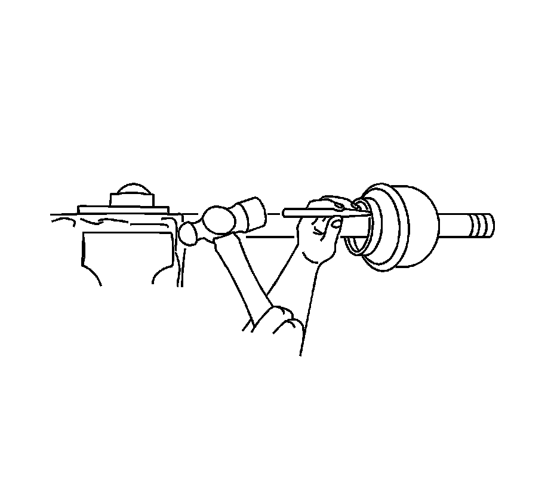
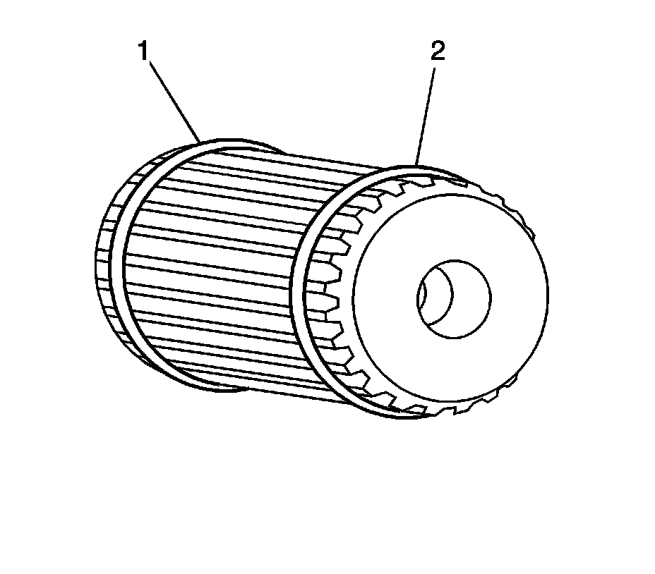
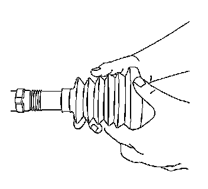
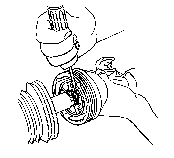
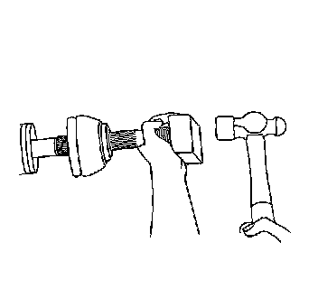
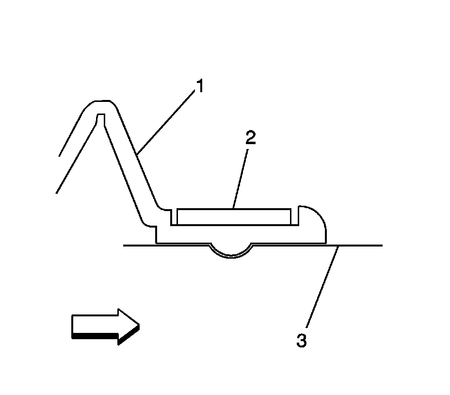
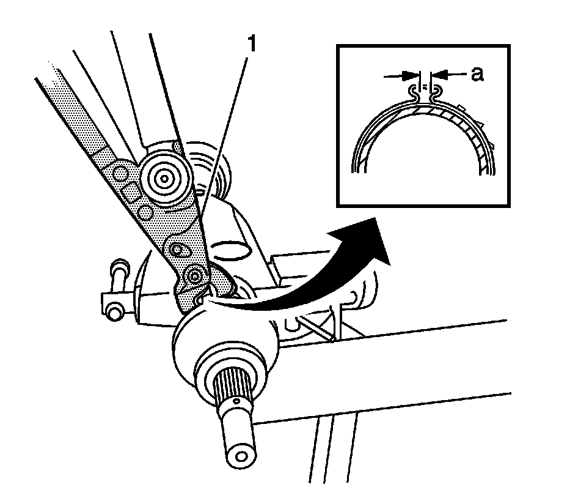
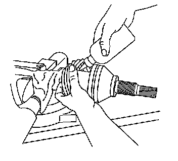
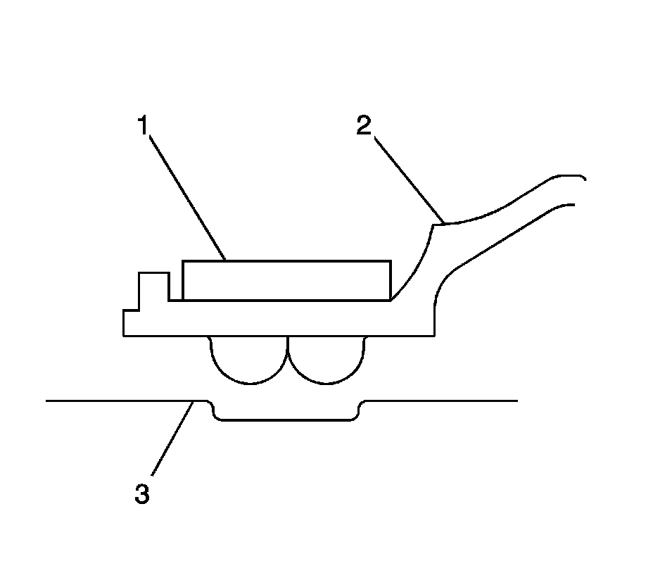
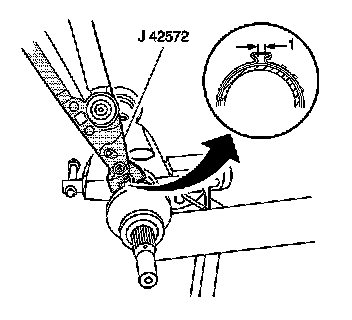

Rear Wheel Drive Shaft Outer Joint and Boot Replacement (RWD)
Rear Wheel Drive Shaft Outer Joint and Boot Replacement (RWD)
Tools Required
J 42572 Drive Shaft Seal Clamp Pliers
Disassembly Procedure
This procedure is to be performed only after the wheel drive shaft has been removed from the vehicle. Refer to Rear Wheel Drive Shaft Replacement (Rear Wheel Drive Shaft Replacement) .
1. Wrap a shop towel around the axle shaft.
2. Place the wheel drive shaft horizontally in a bench vise.
3. Using a side cutter or other suitable tool, remove the large seal retaining clamp from the outer joint seal and discard the clamp.
4. Using a side cutter or other suitable tool, remove the small seal retaining clamp from the outer joint seal and discard the clamp.
5. Separate the seal from the joint outer race at the large diameter end.
6. Slide the seal away from the joint face.
7. Wipe the grease from the face of the joint inner race, cage, balls, etc.

8. Remove the outer joint from the axle shaft using the following steps:
1. Hold the outer joint housing horizontally to the shaft.
2. Position a brass drift on the inner race.
3. Strike the brass drift with a hammer to compress the axle shaft retaining clip.
4. Continue to strike the brass drift in order to remove the outer joint from the axle shaft.

9. Remove and discard the narrow retaining ring from the outer narrow ring groove (2) at the end of the wheel drive shaft.
10. Remove and discard the wide spacer ring from the wide ring groove of the wheel drive shaft (1).

11. Remove the seal from the axle shaft.
12. Remove the wheel drive shaft from the vise.
13. Wrap a shop towel around the joint outer race splined shaft.
14. Place the outer race vertically in a bench vise.
Important: All traces of old grease and any contaminates must be removed.
15. Clean the following parts thoroughly with clean solvent:
* The inner race
* The outer race
* The cage
* The balls
* The axle shaft exposed end
16. Thoroughly air dry all of the parts.
17. Inspect the following parts for damage and/or wear:
* The inner race
* The outer race
* The cage
* The balls
* The axle shaft exposed end
Assembly Procedure
1. Insert approximately 60 percent of the grease from the service kit into the outer joint.
1. Spread the grease onto the ball tracks, the balls, the cage, and the inner race.
2. Spread the remainder of the grease into the bottom of the outer race.
2. Remove the inner joint from the bench vise.
3. Wrap a shop towel around the axle shaft.
4. Place the wheel drive shaft horizontally in a bench vise.
5. Install a new small seal retaining clamp onto the axle shaft.
6. Install the seal onto the axle shaft.
7. Install the new narrow retaining ring to the outer narrow ring groove (2) at the end of the wheel drive shaft.
8. Install the new wide spacer ring to the wide ring groove of the wheel drive shaft (1).

9. Position the outer joint horizontally.
10. Engage the inner race splines onto the axle shaft splines.
11. Compress the axle shaft ring spacer.
1. Press the end of the retaining ring, using a flat-bladed tool, into the axle shaft groove while firmly pressing the inner joint onto the axle shaft.
2. Continue to work around the retaining ring, until it is compressed.

Important: The axle shaft and inner race must be fully seated to each other.
12. Install the outer joint to the axle shaft.
1. Position a wood block over the end of the outer joint threaded shaft.
2. Use a hammer to drive the outer joint onto the shaft.
3. Continue to drive the outer joint until the inner joint seats fully onto the axle shaft.

13. Position the small seal retaining clamp (2) into the seal boot groove.
14. Position the seal and small retaining clamp to the axle shaft boot groove (3) as shown.

Notice: Refer to Fastener Notice (Fastener Notice) .
Important: The seal retaining clamp must not be over-tightened or under-tightened.
15. Using the J 42572 (1), crimp the small seal retaining clamp.
Tighten the small seal clamp until the base of the omega ohm shape has a gap of 1 mm (0.039 in).
The clamping hold time must be no less than 2 seconds.

16. Insert the remaining grease from the service kit into the seal.

17. Position the large seal retaining clamp (1) onto the seal (2).
18. Position the seal and large retaining clamp to the joint outer race (3) as shown.

Important: The seal must not be dimpled, stretched, or otherwise deformed.
19. Inspect the seal for proper shape.
If the seal is not shaped correctly, equalize the pressure in the seal by lifting the seal edge slightly and shape the seal properly by hand.
20. Inspect the seal for damage.
If the seal has been cut or punctured during assembly, you must discard and replace the seal.
Important: The seal retaining clamp must not be over-tightened or under-tightened.
21. Using the J 42572 , crimp the large seal retaining clamp.
Tighten the large seal clamp until the base of the omega ohm shape has a gap of 1 mm (0.039 in).
The clamping hold time must be no less than 2 seconds.
22. Inspect the outer joint for smooth operation. This will also distribute the grease within the joint.
1. Hold the wheel drive shaft vertically, with the outer joint at the bottom.
2. Rotate the wheel drive shaft 4 or 5 times in a circular motion.
3. Install the wheel drive shaft. Refer to Rear Wheel Drive Shaft Replacement (Rear Wheel Drive Shaft Replacement) .